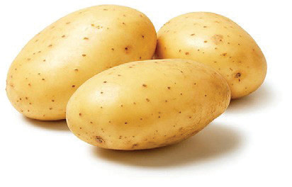
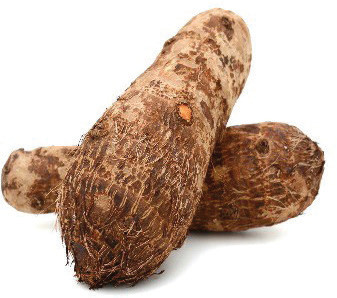

Figure 4.18: Tuber vegetables
Nutritional value of vegetables
The level of nutrients in vegetables depends on vegetable variety, soil type, post-harvest handling and storage. Vegetables contain water, vitamins, fats, carbohydrates, proteins and minerals.
Water: Vegetables such as cabbage, tomatoes and cucumbers have high water contents, ranging from 90 to 95 per cent depending on the variety.
Vitamins: Vegetables are good sources of vitamins. Tomatoes, carrots and leafy vegetables such as spinach and amaranth contain vitamin A. Vegetable seeds contain some B vitamins. Likewise, dark-green leafy vegetables, such as spinach, contains B vitamins; examples are vitamin B₁ (thiamine) and vitamin B₂ (riboflavin). These vegetables also contain vitamin C (ascorbic acid). Cauliflower and tomatoes also contain vitamin C. Vitamin E is found in small amounts in green vegetables. Vitamin K is found in green vegetables and green peas.
Minerals: Vegetables are a good source of minerals such as potassium, calcium, sulphur, magnesium, phosphate and iron. For instance, cabbage contains high levels of calcium and phosphorous. Spinach, green peas and green beans are good sources of iron. Green vegetables also contain calcium and sulphur.
Protein: Vegetables such as green peas, green pigeon peas and mushrooms are good sources of vegetable protein.
Carbohydrates: Some vegetables contain carbohydrates in the form of starch and sugar. Examples of these vegetables are beetroots, potatoes, onions, tomatoes and leeks.
Fat: Most vegetables contain insignificant amounts of fat.